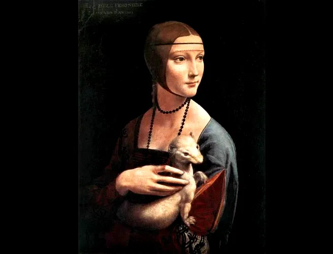
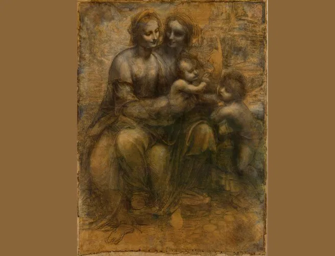

Bibliografia
Leonardo da Vinci (1452–1519): Gênio do Renascimento italiano, foi pintor, inventor, cientista, engenheiro, anatomista, escultor e arquiteto. Considerado um dos maiores talentos da história, sua mente curiosa e multifacetada o tornou símbolo da união entre arte e ciência.
Vida: Nascido em Vinci, na Itália, era filho ilegítimo e recebeu educação básica, mas logo demonstrou grande talento artístico. Foi aprendiz do pintor Verrocchio em Florença e trabalhou para importantes mecenas como Ludovico Sforza, em Milão, e o rei Francisco I, na França, onde passou os últimos anos de vida.
Obra: Produziu algumas das obras mais famosas da história da arte, como A Última Ceia (1495–1498) e Mona Lisa (1503–1506). Seus cadernos de anotações, repletos de desenhos anatômicos, projetos de máquinas e estudos da natureza, revelam uma mente científica muito à frente de seu tempo.
Excentricidade e Legado: Leonardo era conhecido por seu espírito incansavelmente curioso, trabalho meticuloso e muitas vezes inacabado. Dominava várias áreas do conhecimento e buscava entender o funcionamento do mundo com precisão quase moderna. Seu legado ultrapassa as artes, influenciando áreas como anatomia, engenharia, física e design.
Obras Famosas
-
Mona Lisa (c. 1503-1519)

Mona Lisa, foi feita no período do Renascimento: Esta é talvez a pintura mais famosa do mundo. A identidade da modelo é incerta, mas acredita-se que seja Lisa Gherardini, esposa de um mercador florentino. A obra é célebre pelo enigmático sorriso da Mona Lisa e pelo uso magistral do sfumato, que cria contornos suaves e uma atmosfera misteriosa.
-
Adoração dos Magos

A Adoração dos Magos é uma obra inacabada de Leonardo da Vinci, pintada entre 1481 e 1482, que retrata os três Magos visitando o menino Jesus. A pintura é famosa pela complexidade das figuras e pela representação de movimento e emoção, demonstrando a habilidade de Leonardo em perspectiva e proporções. Atualmente, a obra está no Museu do Uffizi, em Florença.
-
Homem Vitruviano

O "Homem Vitruviano" de Leonardo da Vinci é um desenho que representa um homem nu em duas posições sobrepostas, inscrito em um círculo e um quadrado. Ele foi inspirado nas proporções do corpo humano descritas pelo arquiteto romano Vitrúvio, mostrando que o corpo humano é uma medida ideal para o design e a arquitetura. O desenho simboliza a harmonia entre arte, ciência e natureza, refletindo a visão renascentista de que o ser humano é o centro do universo e a medida de todas as coisas.
-
Dama com o Arminho
A "Dama com o Arminho" de Leonardo da Vinci é um retrato de Cecília Gallerani, amante do duque Ludovico Sforza, pintado por volta de 1489. Ela é mostrada com um arminho nos braços, símbolo de pureza e virtude. A obra é famosa pela técnica de sfumato, que cria uma transição suave entre cores, e pela maneira como Da Vinci capturou a expressão serena e a psicologia da figura. A pintura reflete a sofisticação e profundidade das relações humanas no Renascimento.
-
Última Ceia

A "Última Ceia" de Leonardo da Vinci, pintada entre 1495 e 1498, retrata o momento em que Jesus anuncia que um de seus discípulos o trairá. A cena mostra Jesus e os *12 apóstolos, com expressões e reações emocionais bem distintas. Da Vinci utiliza perspectiva linear para centralizar a figura de Jesus e cria profundidade com o uso de sfumato. A obra é cheia de simbolismo, como o número três, representando a Santíssima Trindade. É uma das mais importantes pinturas do Renascimento e um marco na história da arte.
-
A Virgem e o Menino
"A Virgem e o Menino" é uma pintura de Leonardo da Vinci que mostra a Virgem Maria com o Menino Jesus em seus braços ou ao seu lado, transmitindo ternura e ligação materna. Leonardo criou várias versões com esse tema, destacando-se pelo uso do sfumato (técnica que suaviza contornos), pela expressividade dos rostos e pela composição harmoniosa. A obra reflete o ideal renascentista de beleza, humanidade e espiritualidade.
-
A Virgem dos Rochedos

"A Virgem dos Rochedos" é uma pintura de Leonardo da Vinci, criada entre 1483 e 1486. A obra mostra a Virgem Maria com o Menino Jesus, João Batista criança e um anjo, todos em uma paisagem rochosa. A cena é marcada pelo uso de luz suave, perspectiva atmosférica e gestos delicados, típicos do estilo de Leonardo. Ele também usa o sfumato, técnica que suaviza os contornos e dá profundidade à imagem. A obra tem duas versões principais: uma no Museu do Louvre (Paris) e outra na National Gallery (Londres).
-
Batismo de Cristo

"O Batismo de Cristo" é uma pintura feita por Andrea del Verrocchio com ajuda de Leonardo da Vinci, por volta de 1475. A obra mostra Jesus sendo batizado por João Batista no rio Jordão, com a presença de anjos e o Espírito Santo em forma de pomba. Leonardo pintou um dos anjos com grande realismo e beleza, mostrando seu talento mesmo jovem. A pintura marca a transição para o estilo renascentista, com mais naturalismo e profundidade.